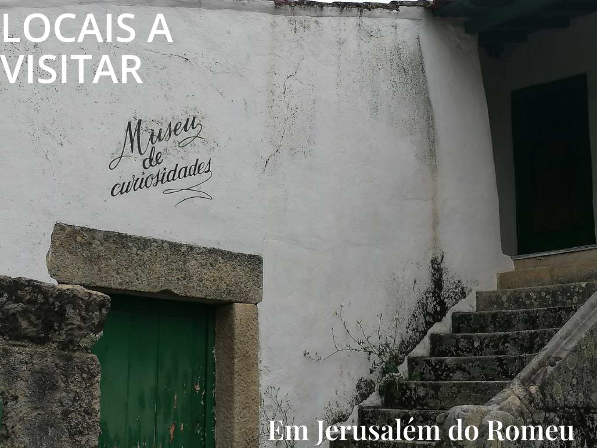

Na Quinta do Romeu, história e tradição entrelaçam-se de forma única no encantador Museu das Curiosidades. Este espaço singular oferece uma viagem através do tempo, onde cada objeto conta uma história e revela segredos das práticas agrícolas, vinícolas e culturais que moldaram a identidade da região de Trás-os-Montes.